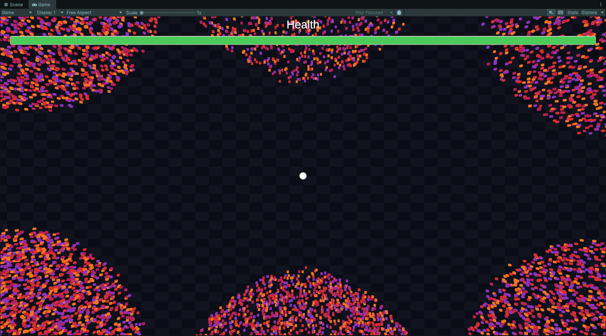
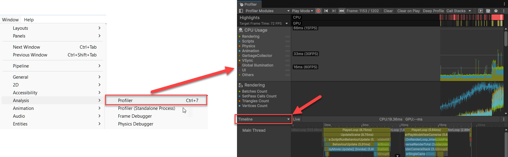
Profiler boxed, and the Profiler window it opens with Timeline set at the bottom.">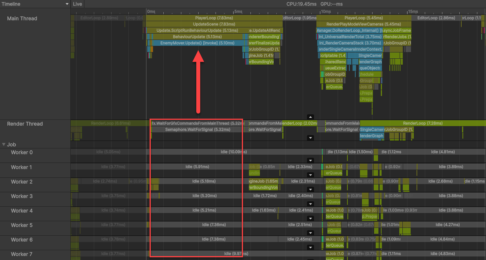
Watch the Timeline at each.
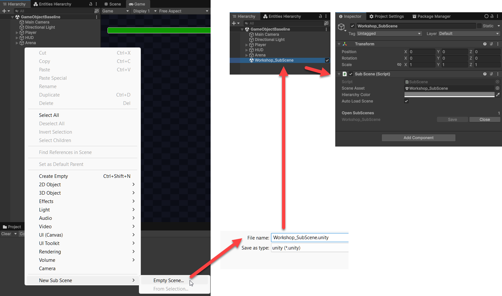
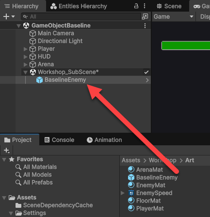
Workshop > Art onto Workshop_SubScene in the Hierarchy, where it now sits as the subscene's only child.">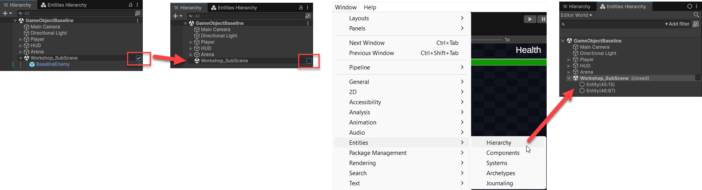
Entities > Hierarchy then shows the Editor World with Workshop_SubScene marked closed and two entities under it.">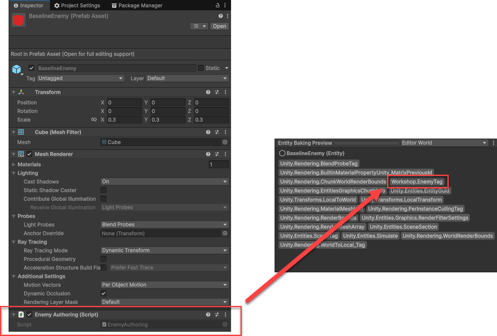
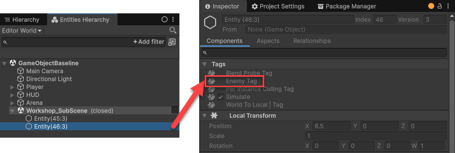
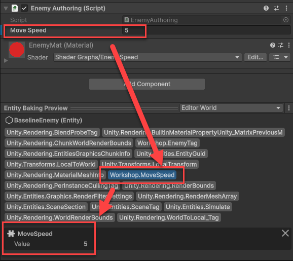
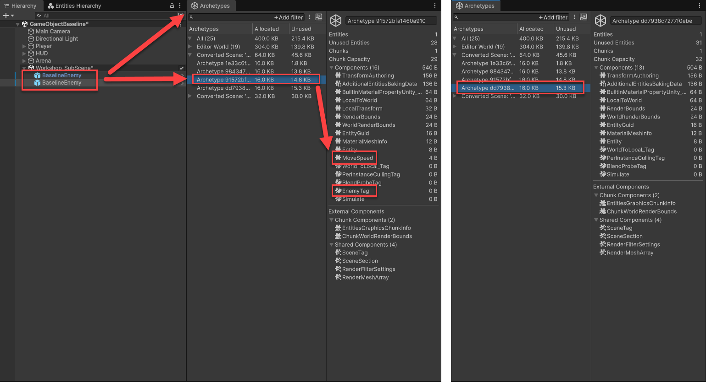
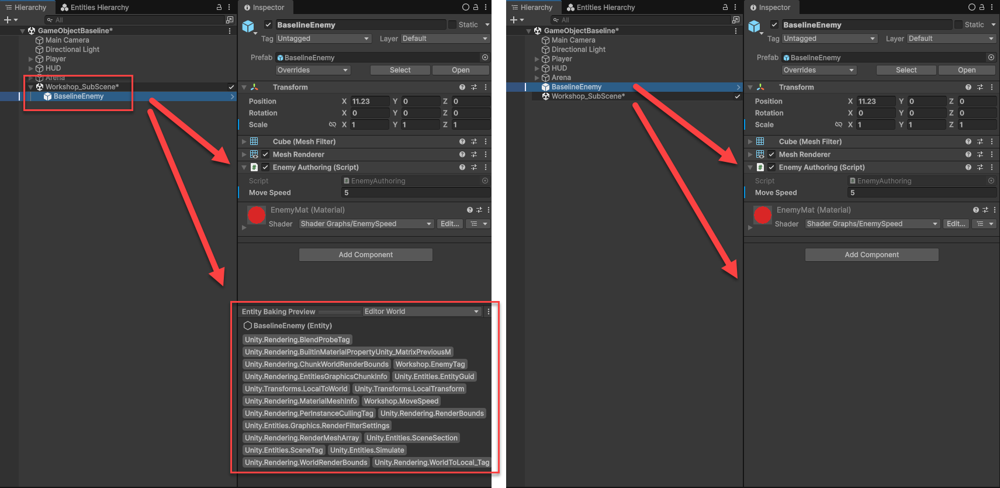